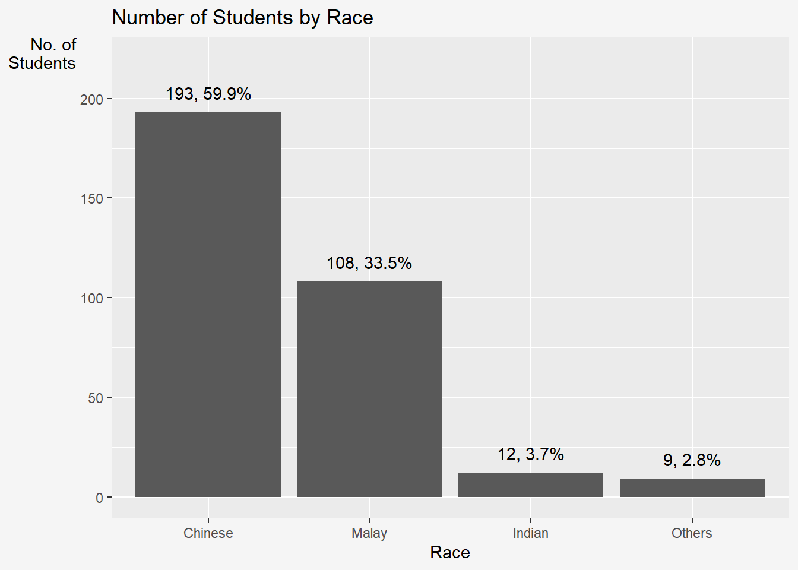
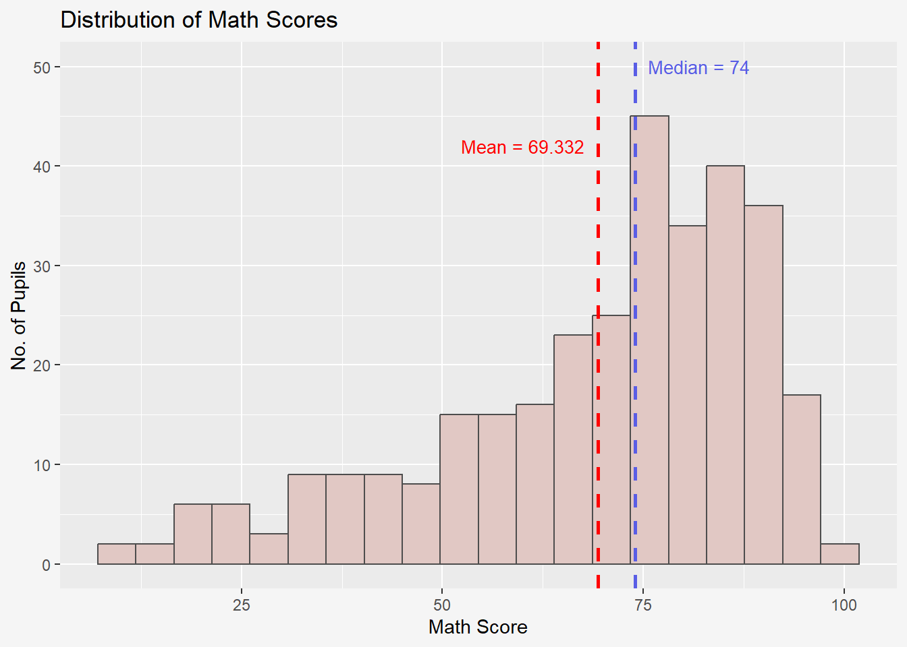
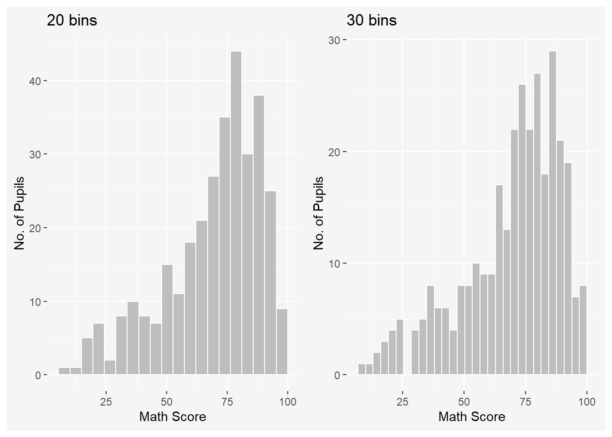
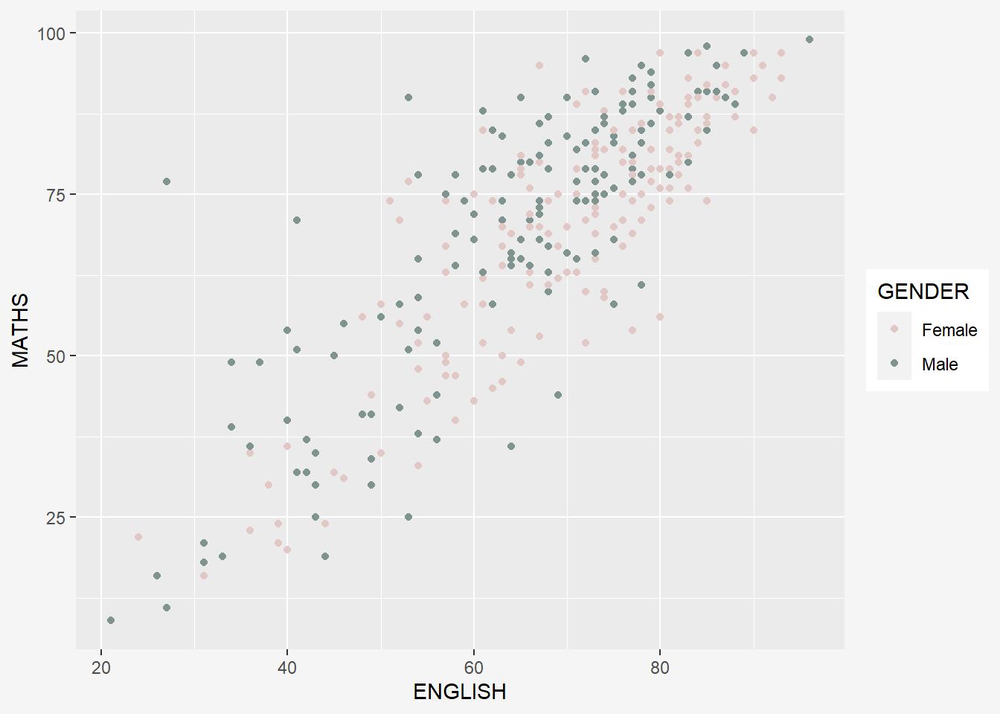
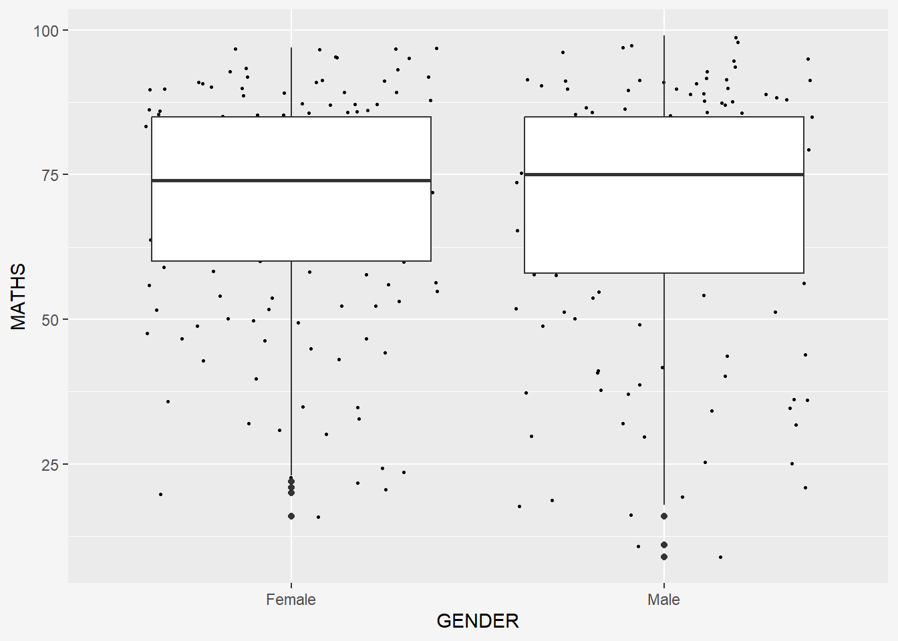
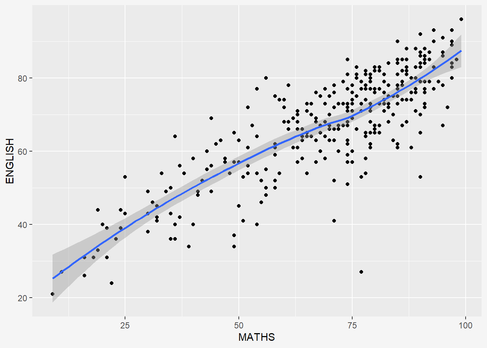
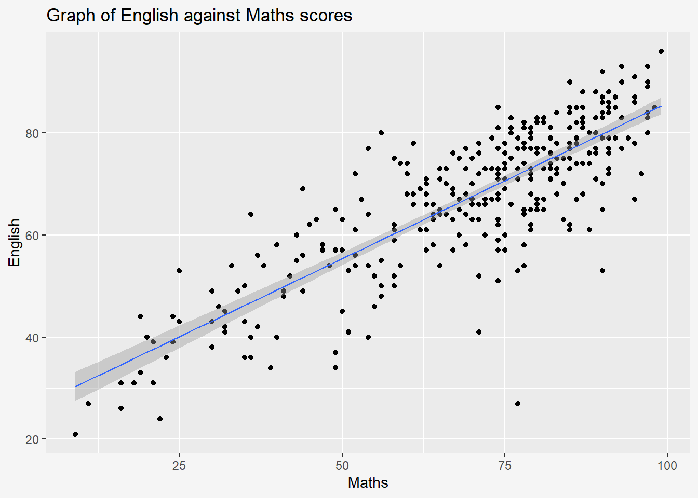

Hands-on Exercise 1: A Layered Grammar of Graphics - ggplot2 methods
1 Overview
In this chapter, we will learn the basic principles and essential components of ggplot2, and gain hands-on experience on using these components to plot statistical graphics based on the principle of Layered Grammar of Graphics
By then end of this chapter, we will be able to apply the essential graphical elements provided by ggplot2 to create elegant and yet functional statistical graphics.
2 Getting Started
The code chunk below uses p_load() of pacman package to check if tidyverse packages are installed in the computer. If they are, then they will be launched into R.
- The code chunk below imports exam_data.csv into R environment by using
read_csv()function of readr package. - readr is one of the tidyverse package.
ID CLASS GENDER RACE
Length:322 Length:322 Length:322 Length:322
Class :character Class :character Class :character Class :character
Mode :character Mode :character Mode :character Mode :character
ENGLISH MATHS SCIENCE
Min. :21.00 Min. : 9.00 Min. :15.00
1st Qu.:59.00 1st Qu.:58.00 1st Qu.:49.25
Median :70.00 Median :74.00 Median :65.00
Mean :67.18 Mean :69.33 Mean :61.16
3rd Qu.:78.00 3rd Qu.:85.00 3rd Qu.:74.75
Max. :96.00 Max. :99.00 Max. :96.00 - Year end examination grades of a cohort of primary 3 students from a local school.
- There are a total of seven attributes. Four of them are categorical data type and the other three are in continuous data type.
- Categorical attributes are: ID, CLASS, GENDER and RACE.
- Continuous attributes are: MATHS, ENGLISH and SCIENCE.
3 R Graphics vs ggplot
Show the code
ggplot(data=exam_data, aes(x = MATHS)) +
geom_histogram(bins=10,
boundary = 100,
color="black",
fill="#7F948F") +
# ggtitle("Distribution of Maths scores")+
labs(x = "Score",
y = "Number of Students",
title = "Distribution of Maths scores")+
#theme_grey()+
theme(plot.background=element_rect(fill="#f5f5f5",colour="#f5f5f5"))ggplot2 is preferred over the built-in plot function due to the following reason:
“The transferable skills from ggplot2 are not the idiosyncrasies of plotting syntax, but a powerful way of thinking about visualisation, as a way of mapping between variables and the visual properties of geometric objects that you can perceive.” - Hadley Wickham
4 Grammar of Graphics
Grammar of Graphics, introduced by Leland Wilkinson (1999), is a general scheme for data visualization which breaks up graphs into semantic components such as scales and layers. It defines the rules of structuring mathematical and aesthetic elements into a meaningful graph.
Layered Grammar of Graphics:
- Data: The dataset being plotted.
- Aesthetics: Take attributes of the data and use them to influence visual characteristics, such as position, colours, size, shape, or transparency.
- Geometrics: The visual elements used for our data, such as point, bar or line. Facets split the data into subsets to create multiple variations of the same graph (paneling, multiple plots).
- Statistics: Statiscal transformations that summarise data (e.g. mean, confidence intervals).
- Coordinate systems define the plane on which data are mapped on the graphic.
- Themes modify all non-data components of a plot, such as main title, sub-title, y-aixs title, or legend background.
5 Essential Grammatical Elements in ggplot2: Data
Let us call the ggplot() function using the code chunk below.

- A blank canvas appears.
- ggplot() initializes a ggplot object.
- The data argument defines the dataset to be used for plotting.
- If the dataset is not already a data.frame, it will be converted to one by fortify().
6 Essential Grammatical Elements in ggplot2: Aesthetic mappings
The aesthetic mappings take attributes of the data and and use them to influence visual characteristics, such as position, colour, size, shape, or transparency. Each visual characteristic can thus encode an aspect of the data and be used to convey information.
All aesthetics of a plot are specified in the aes() function call.
Code chunk below adds the aesthetic element into the plot.

ggplot includes the x-axis and the axis’s label
7 Essential Grammatical Elements in ggplot2: Geom
Geometric objects are the actual marks we put on a plot, examples include:
- geom_point for drawing individual points (e.g., a scatter plot)
- geom_line for drawing lines (e.g., for a line charts)
- geom_smooth for drawing smoothed lines (e.g., for simple trends or approximations)
- geom_bar for drawing bars (e.g., for bar charts)
- geom_histogram for drawing binned values (e.g. a histogram)
- geom_polygon for drawing arbitrary shapes
- geom_map for drawing polygons in the shape of a map! (You can access the data to use for these maps by using the map_data() function).
A plot must have at least one geom; there is no upper limit. You can add a geom to a plot using the + operator.
For complete list, please refer to here.
7.1 geom_bar
The code chunk below plots a bar chart by using geom_bar().
ggplot(data = exam_data,
aes(x = reorder(RACE, RACE, function(x)-length(x)))) +
geom_bar()+
ylim(0, 220) +
geom_text(stat="count",
aes(label=paste0(after_stat(count), ", ",
round(after_stat(count)/sum(after_stat(count))*100, 1), "%")),
vjust=-1) +
labs(x = "Race",
y = "No. of\nStudents",
title = "Number of Students by Race") +
theme_grey() +
theme(
axis.title.y = element_text(hjust=1, angle=0),
plot.background=element_rect(fill="#f5f5f5",colour="#f5f5f5")
) 
7.2 geom_dotplot
In a dot plot, the width of a dot corresponds to the bin width (or maximum width, depending on the binning algorithm), and dots are stacked, with each dot representing one observation.
In the code chunk below, geom_dotplot() of ggplot2 is used to plot a dot plot.
ggplot(data=exam_data,
aes(x=MATHS)) +
geom_dotplot(dotsize=0.5) +
theme(plot.background=element_rect(fill="#f5f5f5",colour="#f5f5f5"))
The y scale is not very useful, in fact it is very misleading.
The code chunk below performs the following two steps:
scale_y_continuous()is used to turn off the y-axis, and- binwidth argument is used to change the binwidth to 2.5.
7.3 geom_histogram
In the code chunk below, geom_histogram() is used to create a simple histogram by using values in MATHS field of exam_data.

7.4 Modifying a geometric object by changing geom()
In the code chunk below,
- bins argument is used to change the number of bins to 20
- fill argument is used to shade the histogram with color
- color argument is used to change the outline colour of the bars
geom_vlineis used to add mean and median linesannotateis used to include descriptions for each line
ggplot(data=exam_data,
aes(x=MATHS)) +
geom_histogram(bins=20,
color="grey30",
fill="#E1C8C4") +
labs(x = "Math Score",
y = "No. of Pupils",
title = "Distribution of Math Scores") +
geom_vline(aes(xintercept=median(exam_data$MATHS, na.rm=T)),
color="#595DE5", linewidth=1, linetype="dashed") +
# Add line annotations
annotate(
"text",
x = 82,
y = 50,
label = paste("Median =", round(median(exam_data$MATHS, na.rm=T), 3)),
color = "#595DE5",
size = 3.5
) +
geom_vline(aes(xintercept=mean(exam_data$MATHS, na.rm=T)),
colour="red", linewidth=1, linetype="dashed") +
# Add line annotations
annotate(
"text",
x = 60,
y = 42,
label = paste("Mean =", round(mean(exam_data$MATHS, na.rm=T), 3)),
color = "red",
size = 3.5
) +
theme(plot.background=element_rect(fill="#f5f5f5",colour="#f5f5f5"))
Show the code
# Original
b_p1 <- ggplot(data=exam_data,
aes(x=MATHS)) +
geom_histogram(bins=20,
boundary = 100,
#binwidth=5,
color= 'white',
fill='grey') +
theme_gray() +
theme(panel.background=element_rect(fill='grey96')) +
labs(x = "Math Score",
y = "No. of Pupils",
title = "20 bins") +
theme(plot.background=element_rect(fill="#f5f5f5",colour="#f5f5f5"))
# Changed
b_p2 <- ggplot(data=exam_data,
aes(x=MATHS)) +
geom_histogram(bins=30,
boundary = 100,
#binwidth=5,
color= 'white',
fill='grey') +
theme_gray() +
theme(panel.background=element_rect(fill='grey96')) +
labs(x = "Math Score",
y = "No. of Pupils",
title = "30 bins") +
theme(plot.background=element_rect(fill="#f5f5f5",colour="#f5f5f5"))
# format plot layout
b_p1 + b_p2
Show the code
# Original
bw_p1 <- ggplot(data=exam_data,
aes(x=MATHS)) +
geom_histogram(bins=20,
boundary = 100,
#binwidth=5,
color= 'white',
fill='grey') +
theme_gray() +
theme(panel.background=element_rect(fill='grey96')) +
labs(x = "Math Score",
y = "No. of Pupils",
title = "20 bins") +
theme(plot.background=element_rect(fill="#f5f5f5",colour="#f5f5f5"))
# Changed
bw_p2 <- ggplot(data=exam_data,
aes(x=MATHS)) +
geom_histogram(#bins=20,
boundary = 100,
binwidth=5,
color= 'white',
fill='grey') +
theme_gray() +
theme(panel.background=element_rect(fill='grey96')) +
labs(x = "Math Score",
y = "No. of Pupils",
title = "Binwidth 5 = 19 bins") +
theme(plot.background=element_rect(fill="#f5f5f5",colour="#f5f5f5"))
# format plot layout
bw_p1 + bw_p2Be mindful of the boundaries of the bins and whether a point will fall into the left or right bin if it is on a boundary.
Show the code
# Original
bb_p1 <- ggplot(data=exam_data,
aes(x=MATHS)) +
geom_histogram(bins=20,
boundary = 100,
#binwidth=5,
color= 'white',
fill='grey') +
theme_gray() +
theme(panel.background=element_rect(fill='grey96')) +
labs(x = "Math Score",
y = "No. of Pupils",
title = "Bin alignment using boundary") +
theme(plot.background=element_rect(fill="#f5f5f5",colour="#f5f5f5"))
# Changed
bb_p2 <- ggplot(data=exam_data,
aes(x=MATHS)) +
geom_histogram(bins=20,
center = 50,
#binwidth=5,
color= 'white',
fill='grey') +
theme_gray() +
theme(panel.background=element_rect(fill='grey96')) +
labs(x = "Math Score",
y = "No. of Pupils",
title = "Bin alignment using center") +
theme(plot.background=element_rect(fill="#f5f5f5",colour="#f5f5f5"))
# format plot layout
bb_p1 + bb_p2
Note: Don’t use both boundary and center for bin alignment. Just pick one.
- bins: default bin number is 30 in ggplot2
- boundary: bin position specifier
- binwidth: bin breaks automatically based on a specific binwidth; can be used to specify the endpoint of any bin or center to specify the center of any bin
7.5 Modifying a geometric object by changing aes()
The code chunk below changes the interior colour of the histogram (i.e. fill) by using sub-group of *aesthetic()*.
scale_fill_manual() allow you to specify your own set of mappings from levels in the data to aesthetic values.
ggplot(data=exam_data,
aes(x=MATHS,
fill = GENDER)) +
geom_histogram(bins =20,
color='grey40')+
scale_fill_manual(values = c("#E1C8C4","#7F948F"))+
theme(plot.background=element_rect(fill="#f5f5f5",colour="#f5f5f5"))
This approach can be used to colour, fill and alpha of the geometric.
7.6 geom_density
geom-density() computes and plots kernel density estimate, which is a smoothed version of the histogram.
It is a useful alternative to the histogram for continuous data that comes from an underlying smooth distribution.
The code below plots the distribution of Maths scores in a kernel density estimate plot, where y = relative frequency / binwidth.
ggplot(data=exam_data,
aes(x=MATHS)) +
geom_density(color='#7F948F')+
theme(plot.background=element_rect(fill="#f5f5f5",colour="#f5f5f5"))
The code chunk below plots two kernel density lines by using colour or fill arguments of aes().
Changes: - color within geom_density needs to be removed. - added fill and color within aes() - scale_color_manual() for changing line color - scale_fill_manual() for changing area fill colors.
ggplot(data=exam_data,
aes(x=MATHS,
fill = GENDER,
color=GENDER)) +
geom_density(size=2,
alpha=0.6)+
scale_color_manual(values = c("#E1C8C4","#7F948F"))+
scale_fill_manual(values = c("#E1C8C4","#7F948F"))+
labs(x = "Maths Score",
y = "Density",
title = "Density of Maths Score by Gender") +
theme(plot.background=element_rect(fill="#f5f5f5",colour="#f5f5f5"))7.7 geom_boxplot
geom_boxplot() displays continuous value list. It visualises five summary statistics (the median, two hinges and two whiskers), and all “outlying” points individually.
The code chunk below plots boxplots by using geom_boxplot().
ggplot(data=exam_data,
aes(y=MATHS,
x=GENDER)) +
geom_boxplot() +
theme(plot.background=element_rect(fill="#f5f5f5",colour="#f5f5f5"))
Notches are used in box plots to help visually assess whether the medians of distributions differ. If the notches do not overlap, this is evidence that the medians are different.
The code chunk below plots the distribution of Maths scores by gender in notched plot instead of boxplot.
ggplot(data=exam_data,
aes(y = MATHS,
x= GENDER)) +
geom_boxplot(notch=TRUE) +
theme(plot.background=element_rect(fill="#f5f5f5",colour="#f5f5f5"))We can also incorporate facet_wrap() to create boxplots of math scores for each class that is separated by gender.

7.8 geom_violin
geom_violin is designed for creating violin plot. Violin plots are a way of comparing multiple data distributions. With ordinary density curves, it is difficult to compare more than just a few distributions because the lines visually interfere with each other. With a violin plot, it’s easier to compare several distributions since they’re placed side by side.
The code below plot the distribution of Maths score by gender in violin plot.
7.9 geom_point
geom_point() is especially useful for creating scatterplot.
The code chunk below plots a scatterplot showing the Maths and English grades of pupils by using geom_point(), grouped by gender.
ggplot(data=exam_data,
aes(y = MATHS,
x= ENGLISH,
color = GENDER)) +
geom_point() +
scale_color_manual(values = c("#E1C8C4","#7F948F")) +
theme(plot.background=element_rect(fill="#f5f5f5",colour="#f5f5f5"))
To add reference lines and x/y axis limits:
ggplot(data=exam_data,
aes(x= ENGLISH,
y = MATHS,
color = GENDER)) +
geom_point() +
coord_cartesian(xlim=c(0,100),
ylim=c(0,100)) +
scale_color_manual(values = c("#E1C8C4","#7F948F")) +
geom_vline(aes(xintercept = 50),
col = 'grey',
size = 0.8,
linetype = "dashed") +
geom_hline(aes(yintercept = 50),
col = 'grey',
size = 0.8,
linetype = "dashed") +
labs(x = "English Score",
y = "Maths Score",
title = "Maths against English Score by Gender") +
theme(plot.background=element_rect(fill="#f5f5f5",colour="#f5f5f5"))
7.10 Combination of geom objects
The code chunk below plots the data points on the boxplots by using both geom_boxplot() and geom_point().
Important:
Order of geom layer matters! In the code below, boxplot is plotted after/above the scatter and thus covers parts of the scatterplot.
Show the code


8 Essential Grammatical Elements in ggplot2: Stat
The Statistics functions statistically transform data, usually as some form of summary. For example:
- frequency of values of a variable (bar graph)
- a mean
- a confidence limit
- There are two ways to use these functions:
- add a
stat_()function and override the default geom, or - add a
geom_()function and override the default stat.
- add a
8.1 Working with stat()
The boxplots below are incomplete because the positions of the means were not shown.

8.2 Working with stat - the stat_summary() method
The code chunk below adds mean values by using stat_summary() function and overriding the default geom.

8.3 Working with stat - the geom() method
The code chunk below adding mean values by using geom_() function and overriding the default stat.
8.4 Adding best fit curve
The scatterplot below shows the relationship of Maths and English grades of pupils. The interpretability of this graph can be improved by adding a best fit curve.
In the code chunk below, geom_smooth() is used to plot a best fit curve on the scatterplot.
ggplot(data=exam_data,
aes(x= MATHS, y=ENGLISH)) +
geom_point() +
geom_smooth(size=1) +
theme(plot.background=element_rect(fill="#f5f5f5",colour="#f5f5f5"))
The default method used is loess.
The default smoothing method can be overridden as shown below.
ggplot(data=exam_data,
aes(x= MATHS, y=ENGLISH)) +
geom_point() +
geom_smooth(size=1, method = lm) +
theme(plot.background=element_rect(fill="#f5f5f5",colour="#f5f5f5"))To add equation and R^2 to the plot, we can use the library ggpmisc.
stat_poly_line() is used to add lm line and stat_poly_eq() displays the equation and R-square value.
9 Essential Grammatical Elements in ggplot2: Facets
Facetting generates small multiples (sometimes also called trellis plot), each displaying a different subset of the data. They are an alternative to aesthetics for displaying additional discrete variables. ggplot2 supports two types of factes, namely: facet_wrap and facet_grid().
9.1 Working with facet_wrap()
facet_wrap wraps a 1d sequence of panels into 2d. This is generally a better use of screen space than facet_grid because most displays are roughly rectangular.
The code chunk below plots a trellis plot using facet-wrap().
ggplot(data=exam_data,
aes(x=MATHS)) +
geom_histogram(bins=20) +
facet_wrap(~CLASS) +
labs(y='Number of students',
x='Math scores',
title = "Maths scores by Class") +
theme(plot.background=element_rect(fill="#f5f5f5",colour="#f5f5f5"))Tilde Operator:
The operator ~ is used to define the relationship between dependent variable and independent variables in a formula; it separates the lefthand side and righthand side.
The basic syntax for the lm() function is: model <- lm(y ~ x1 + x2, data=df)
The variable name on the left side of the tilde operator (y) represents the response variable. The variable names on the right side of the tilde operator (x1, x2) represent the predictor variables.
For multiple predictor variables: model <- lm(y ~ x1 + x2 + x3, data=df)
For unknown number of predictor variables: model <- lm(y ~ ., data=df)
9.1.1 Subsetting Data
If we only want to visualise classes 3A, 3B, 3C, 3D, we could subset the exam data to include only these students using filter() from the dplyr package.
sub_data <- exam_data %>%
filter(CLASS %in% c('3A', '3B', '3C', '3D'))
ggplot(data=sub_data,
aes(x=MATHS)) +
geom_histogram(bins=20) +
facet_wrap(~CLASS) +
labs(y='Number of students',
x='Math scores',
title = "Maths scores for Classes 3A, 3B, 3C, 3D") +
theme(plot.background=element_rect(fill="#f5f5f5",colour="#f5f5f5"))9.1.2 Multiple Overlaid Histograms
ggplot(data=exam_data,
aes(x=MATHS, fill = GENDER)) + #Add fill to split histogram categories
geom_histogram(position = "identity", alpha=0.2, bins=20) +
labs(y='Number of students',
x='Math scores',
title = "Maths scores by Gender") +
theme(plot.background=element_rect(fill="#f5f5f5",colour="#f5f5f5"))References: StatisticsGlobe and Facetted histograms with overlaid normal curves
9.1.3 Grouped Data

9.2 facet_grid() function
facet_grid() forms a matrix of panels defined by row and column facetting variables. It is most useful when you have two discrete variables, and all combinations of the variables exist in the data.
The code chunk below plots a trellis plot using facet_grid().
10 Essential Grammatical Elements in ggplot2: Coordinates
The Coordinates functions map the position of objects onto the plane of the plot. There are a number of different possible coordinate systems to use, they are:
coord_cartesian(): the default cartesian coordinate systems, where you specify x and y values (e.g. allows you to zoom in or out).coord_flip(): a cartesian system with the x and y flipped.coord_fixed(): a cartesian system with a “fixed” aspect ratio (e.g. 1.78 for a “widescreen” plot).coord_quickmap(): a coordinate system that approximates a good aspect ratio for maps.
10.1 Working with Coordinate
Bar chart of ggplot2 is in vertical form by default.
ggplot(data=exam_data,
aes(x=RACE)) +
geom_bar()+
labs(y='Number of students',
x='Race',
title = "Number of Students by Race") +
theme(plot.background=element_rect(fill="#f5f5f5",colour="#f5f5f5"))The code chunk below flips the horizontal bar chart into vertical bar chart by using coord_flip().
Note: No changes to x-, y- axis names under labs().
10.2 Changing the y- and x-axis range
The scatterplot below is slightly misleading because the y-aixs and x-axis range are not equal.
ggplot(data=exam_data,
aes(x= MATHS, y=ENGLISH)) +
geom_point() +
geom_smooth(method=lm, size=0.5) +
labs(y='English',
x='Maths',
title = "Graph of English against Maths scores") +
theme(plot.background=element_rect(fill="#f5f5f5",colour="#f5f5f5"))
The code chunk below fixed both the y-axis and x-axis range from 0-100.
11 Essential Grammatical Elements in ggplot2: Themes
Themes control elements of the graph not related to the data such as background colour, font size, gridlines, and colour of labels.
Built-in themes include theme_gray() (default), theme_bw(), theme_classic()
A list of theme can be found at this link. Each theme element can be conceived of as either a line (e.g. x-axis), a rectangle (e.g. graph background), or text (e.g. axis title).
The code chunk below plots a horizontal bar chart using theme_gray().
A horizontal bar chart plotted using theme_classic().
A horizontal bar chart plotted using theme_minimal().
To modify components of a theme, refer to this ggplot2 webpage.
12 References
Kam, T.S. (2023). A Layered Grammar of Graphics: ggplot2 methods.
Hadley Wickham (2023) ggplot2: Elegant Graphics for Data Analysis. Online 3rd edition.
Winston Chang (2013) R Graphics Cookbook 2nd edition. Online version.
Healy, Kieran (2019) Data Visualization: A practical introduction. Online version.